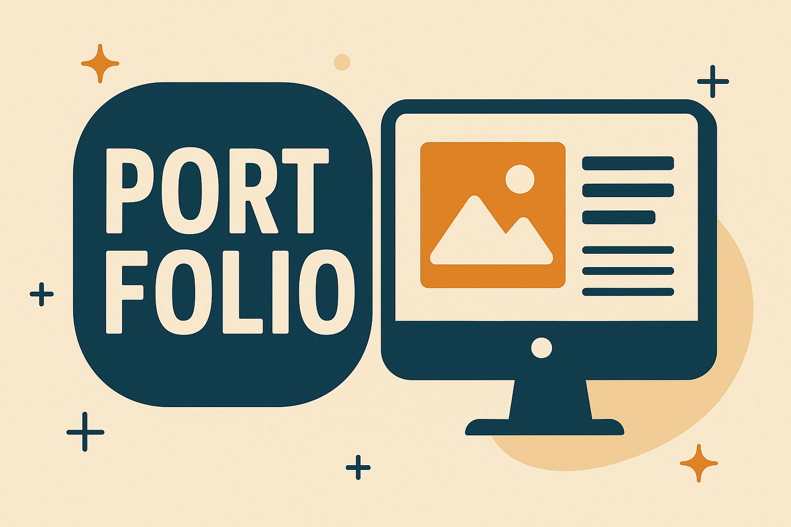

プロフィール
PROFILE前職で塗装・空調設備の現場に従事し、「段取り」と「丁寧な対応」を重視してきました。 会社サイトをWordPressで自主制作した経験をきっかけにWeb制作へ挑戦。 HTML/CSS/JavaScript、SCSS、GitHubを日々学習し、誠実に伝わるWebを目指します。
- 慎重で丁寧なコーディング
- ユーザーに安心感を与える構成
- 少人数チームでの着実な進行

スキル
SKILLS- HTML5
- SCSS / CSS
- JavaScript
- WordPress
- Git / GitHub
制作履歴
NEWS

アニメーション追加。
アニメーション(スムーススクロール、トップ戻るボタン)。スムーススクロールはcssではなくjQueryで作成した。
コンテンツ追加
Hero,Skills作成、HTML&Cssクラス名とレイアウト変更、BEM設定重視。メインカラー、サブカラー変更。
SCSSのバージョン対応
Scssの今後のバージョンアップに関しての対応。
ポートフォリオ制作開始
ポートフォリオのトップページを作成。HTML 大体の骨組みとダミー画像を挿入,Scss(css 自動コンパイル),images ダミー画像入れる。今回のサイト作成から'rem'で指定する事を意識して作成する。次はコンタクトフォームの作成、サムネイルの作成し差し替える。全ての文章。